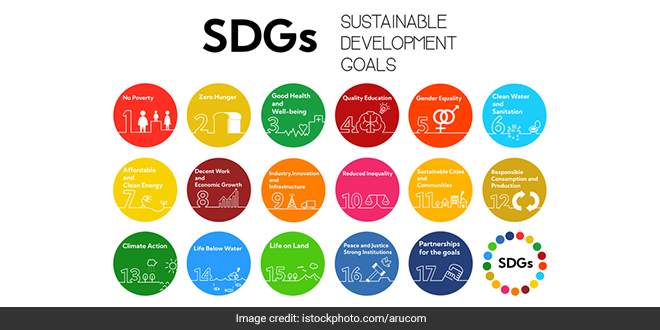

Facts about India

- The population in India is 1.3 billion people. It is the seventh largest country in the world. The capital of India is New Delhi.
- It is the world's second most populous country. The most populous and cosmopolitan cities in the world are Mumbai, Kolkata & Delhi. The world's fastest growing high technology centers are Bangalore, Chennai & Hyderabad.
- India has 22 major languages and many more dialects. The official languages in India is English & Hindi.
- The national animal is the tiger, the national bird is the peacock, and the national flower is the lotus.
- The iconic Taj Mahal is one of the 7 Wonders of the World. It was designated as a UNESCO World Heritage Site in 1983.
- The currency used in India is called Indian Rupees (INR).
Facts about sustainability in India
- India ranks 109th globally in the Sustainable Development Goals (SDG) Index, with an overall score of 63.99% that has been improving since 2020-21. Renewable energy leadership: India is a major player in the global renewable energy market, with a high ranking in wind and solar power, and it hosts international initiatives like the International Solar Alliance. Progress on SDG goals: India's SDG Index score has improved, and its "Spillover Score" of 95.74% indicates that its actions have a positive impact on other countries' ability to achieve their own goals. Economic growth vs. environmental cost: While economic development has lifted many out of poverty, it has come with a significant environmental cost, with India having some of the most polluted cities in the world, according to the International Growth Centre (IGC).
- Lack of collaboration: Despite government initiatives and a growing awareness among consumers, there is a need for more widespread and collaborative efforts. Many initiatives operate in isolation, which limits their overall impact. Consumer behavior: There is evidence of growing consumer interest in sustainable practices. For example, two in every three consumers opt to trade in old devices when buying new ones, and one in four regularly participate in manufacturer-led electronic device recycling programs. Traditional roots: Sustainability is not a new concept for India, as many traditional practices have historically emphasized living in harmony with nature and being resourceful. Challenges and future outlook: While India has made progress, challenges remain in infrastructure development, widespread public awareness of major actions like using renewable energy, and ensuring inclusive and equitable distribution of benefits. The upcoming years are crucial for policymakers, businesses, and individuals to work together to address these issues.
India & The UN 2030 Agenda Against Poverty

- India is actively engaged with the UN's 2030 Agenda for Sustainable Development, aligning its national priorities with the goals of ending poverty and inequality, and fostering inclusive growth. National integration: India has incorporated the 17 SDGs into its national development agenda, emphasizing the principle of "no one left behind". Subnational monitoring: The SDG India Index, developed by NITI Aayog and the United Nations, measures and scores the performance of states and union territories on social, economic, and environmental progress, fostering competition and learning.Cooperative federalism: The country has adopted a cooperative federalism approach to achieve the SDGs, which involves cooperation between the central government, states, and local authorities. South-South cooperation: India also extends its commitment outward through capacity-building and knowledge-sharing with other developing nations.
- Poverty and hunger: Programs like the Pradhan Mantri MUDRA Yojana provide credit to small businesses to create jobs and improve livelihoods, directly addressing Goal 1 - (No Poverty) and Goal 2 - (Zero Hunger). Economic growth and employment: The government has a "Make in India" initiative to boost manufacturing and a Start-up India program to encourage entrepreneurship, contributing to Goal 8 - (Decent Work and Economic Growth). Health and well-being: Initiatives focus on public health, including a high-speed internet network to improve access to services, supporting Goal 3 - (Good Health and Well-being). Climate action: India has set ambitious targets to reduce its carbon emissions, such as increasing non-fossil fuel-based energy capacity to 500 GW by 2030, aligning with Goal 13 - (Climate Action). Infrastructure: Investments are being made in resilient and sustainable infrastructure, such as the Bharat Broadband Network Ltd for rural connectivity.
- Global context: Despite India's efforts, the country has a large population and faces challenges in eradicating poverty, though it has made significant progress. Overall ranking: In the 2025 UN Sustainable Development Report, India ranked 99th out of 167 countries, indicating a need for continued and accelerated progress across all goals. Poverty reduction: Recent reports indicate positive trends in employment and a significant reduction in urban unemployment, alongside a rise in self-employment, particularly among women in rural areas.
Summary:
- India ranks 99th in the 2025 UN SDG Report with a score of 63.99%, showing steady progress.
- Its Spillover Score of 95.74% highlights positive influence on other countries’ SDG progress.
- India is a global leader in solar and wind energy and hosts the International Solar Alliance..
- Economic growth has reduced poverty but increased pollution, with several cities among the most polluted.
- Traditional cultural practices emphasize sustainability and harmony with nature.
- Consumer awareness is rising—two in three trade in old devices, and one in four recycle electronics.
- Many sustainability initiatives operate in isolation, highlighting the need for broader collaboration.
- India has embedded all 17 SDGs into its national agenda, promoting inclusive growth.
- The SDG India Index tracks state-level progress, encouraging competition and learning.
- Cooperative federalism ensures central, state, and local governments work together on SDGs.
- India engages in South-South cooperation, sharing knowledge and building capacity with other nations.
- Targeted programs address poverty, jobs, health, climate action, and rural infrastructure expansion.
- India promotes inclusive growth through national integration of all 17 SDGs, ensuring “no one left behind.”
- Rural self-employment, especially among women, is rising, contributing to poverty reduction and empowerment.
- India’s climate action goals include achieving 500 GW of non‑fossil fuel energy capacity by 2030.
References:
- World Bank. India Poverty and Equity Brief : October 2025 (English). Poverty and Equity Brief Washington, D.C. : World Bank Group.
- The number of poor are falling in India; is it time to shift the poverty line now?
- How poor is 'poor' in India?
- Poverty in India: Real-Life Consequences & Sustainable Solutions
- Multidimensional Poverty Index (MPI), Report 2025, Indicator, Calculation
- 10 Interesting Facts about India
- India